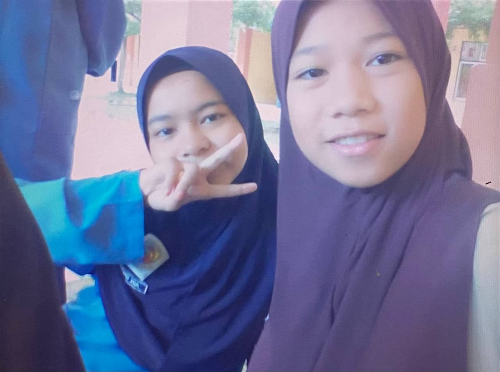

Degree in Information Management
• Hoping for graduate with Honours
Diploma in Information Management
• Current CGPA 3.4
SPM Graduate
• Active in co-curricular • Get 4A's in SPM
Primary School
• Appointed as the assistant treasurer for the school prefects
This section shows my education background in a clear timeline, starting from primary school until my current studies. I studied at SK Wakaf Raja for primary education, where I was appointed as an assistant treasurer. I then continued my secondary education at SMK Dato’ Ismail and graduated with SPM, actively participating in co-curricular activities and achieving 4A’s. After that, I pursued a Diploma in Information Management at Universiti Teknologi MARA (UiTM) from 2023 to 2026 and achieved a current CGPA of 3.4. I am now continuing my Degree in Information Management at UiTM and hope to graduate with honours.